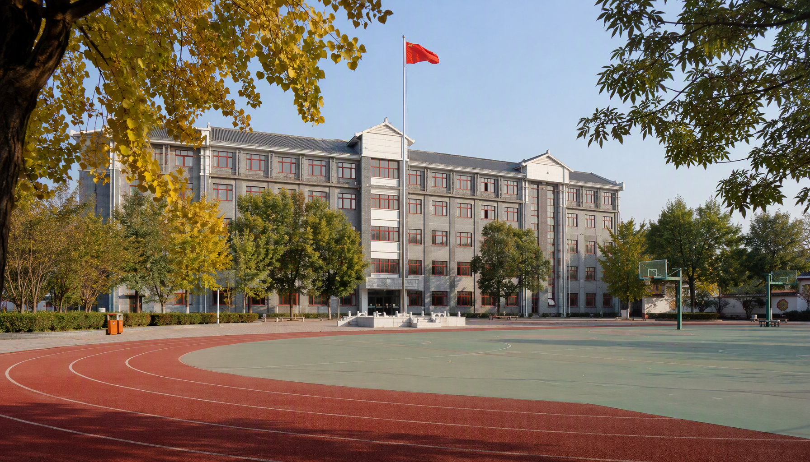

当前位置：首页 > 学校概况
资料核对：学校名称、地址、创办日期和校训来自公开教育资料；学生与教职工数据标注为 2024 年末口径。本站不是学校官方发布平台，页面内容不构成校务、招生或收费公告。
学校简介
北京市第一六六中学位于北京市东城区，是一所完全中学。学校前身可追溯至1864年创办的贝满女塾，经历近代女子教育、北京市第十二女子中学等历史阶段，1971年定名为北京市第一六六中学，校名沿用至今。学校历史沿革和校园文化可参阅本页“资料来源”所列公开报道。
公开政务信息显示，学校设有灯市口校区和毕业校区：灯市口校区办公地址为北京市东城区同福夹道3号，另有校址位于东四六条。北京市东城区人民政府公开的2024年度决算说明记录了年末学生2348人、编制教职工262人；这些是特定年度统计，不等同于当前实时规模。

校园全景：明德楼与运动场公开报道显示，学校重视科技、人文、健康与艺术教育，金鹏科技团、生命科学实验班、管乐团和戏剧教育等活动构成了校园实践的一部分。此处只做公开报道摘要，不对学校当前课程数量、班级规模或师资结构作推断。
学校公开资料中可见的校训为“敬业乐群、求实进取”。网站沿用政企信息站的栏目结构，以蓝白色系呈现公开资料，方便同学协作维护。
办学基本情况一览
| 项目 | 情况 |
|---|---|
| 学校性质 | 公办全日制完全中学（初中、高中） |
| 主管部门 | 北京市东城区教育委员会（公开资料口径） |
| 校区情况 | 灯市口校区；毕业校区位于东四六条 |
| 2024年末学生数 | 2348人（决算说明口径） |
| 编制教职工 | 262人（决算说明口径） |
| 灯市口校区地址 | 北京市东城区同福夹道3号 |
| 公开电话 | 010-65253226（政务地图标注） |
公开资料使用说明
| 资料类型 | 页面处理方式 |
|---|---|
| 历史、校训、办学特色 | 以公开教育资料和东城教育融媒体报道交叉核对后摘要。 |
| 学生、教职工、电话 | 保留来源页面的统计时点，并在文字中标注“公开资料口径”。 |
| 领导姓名、收费、招生、作息 | 未找到可确认的当前官方页面，不在非官方网站中自行填写。 |
机构设置
东城区人民政府公开的单位决算说明显示，学校为全额拨款事业单位，无下属单位及分支机构，组织结构包含教学管理、行政后勤、学生发展、信息技术等工作体系。具体处室名称、负责人和办公安排以学校最新官方信息为准。